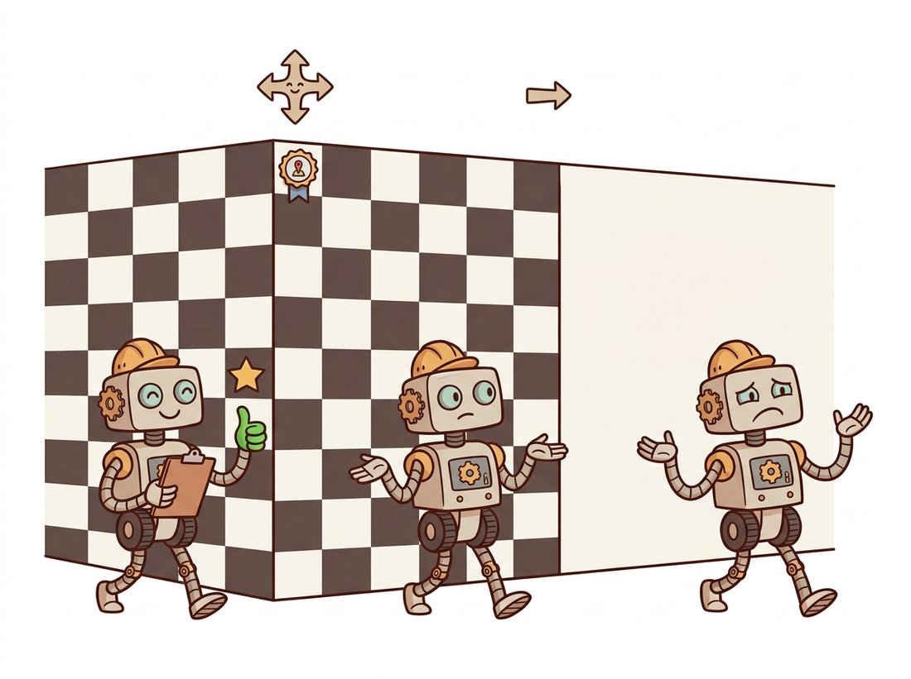

"I assume every pixel in my 21-by-21 window is heading exactly where I am heading. It is a heroic assumption, it is wrong at every motion boundary in the image, and it is the only reason any of you get optical flow in real time."
A Confidently Extrapolating Corner Point
Lucas-Kanade buys the missing flow equation in bulk: assume every pixel in a small window moves together, and one unsolvable equation becomes an overdetermined least-squares system. The normal-equations matrix of that system is the structure tensor from Chapter 10, so the points where flow is reliably computable are exactly the corners we already know how to detect. Add Newton-style iteration for accuracy and a coarse-to-fine pyramid (from Chapter 4) for large motions, and you get the Kanade-Lucas-Tomasi (KLT) tracker: forty years old, still inside production SLAM systems, drones, and the feature-track front ends of Chapter 14.
Section 15.1 ended at an impasse: the optical flow constraint equation pins each pixel's motion to a line, never a point. This section resolves the impasse the local way, by assuming that motion is constant over a small neighborhood and letting the neighborhood's pixels vote. The result is sparse flow: superbly accurate motion estimates at well-chosen points, and silence everywhere else. For a great many applications (tracking, odometry, structure from motion) sparse is not a compromise but exactly the right product.
1. From One Equation to a Solvable System Intermediate
Take a window $W$ of $N$ pixels (say $21 \times 21$, so $N = 441$) around the point of interest and assume all of them share one velocity $(u, v)$. Each pixel $i$ contributes its own OFCE, $I_{x,i} u + I_{y,i} v = -I_{t,i}$, giving $N$ equations in 2 unknowns. Stack them into matrix form:
$$ A \begin{bmatrix} u \\ v \end{bmatrix} = \mathbf{b}, \qquad A = \begin{bmatrix} I_{x,1} & I_{y,1} \\ \vdots & \vdots \\ I_{x,N} & I_{y,N} \end{bmatrix}, \qquad \mathbf{b} = -\begin{bmatrix} I_{t,1} \\ \vdots \\ I_{t,N} \end{bmatrix}. $$
With $N \gg 2$ the system is overdetermined, and the least-squares solution comes from the normal equations $A^T A \, \mathbf{v} = A^T \mathbf{b}$, written out:
$$ \underbrace{\begin{bmatrix} \sum I_x^2 & \sum I_x I_y \\ \sum I_x I_y & \sum I_y^2 \end{bmatrix}}_{M,\ \text{the structure tensor}} \begin{bmatrix} u \\ v \end{bmatrix} = - \begin{bmatrix} \sum I_x I_t \\ \sum I_y I_t \end{bmatrix}. $$
Look hard at the matrix $M$. It is, sum for sum, the structure tensor that Chapter 10 built to detect corners. There the question was "does this neighborhood change in two directions?"; here it is "do this neighborhood's gradients constrain motion in two directions?", and both questions are answered by the same eigenvalues. If both eigenvalues $\lambda_1 \ge \lambda_2$ are large, $M$ inverts stably and the flow is well determined. If $\lambda_2 \approx 0$, the window contains only an edge and the system is rank deficient: the aperture problem of Section 15.1, now visible as a singular matrix. If both are small, the window is flat and there is nothing to solve.
The deepest fact in this section is an identity, not an algorithm: the matrix that Lucas-Kanade must invert to compute flow is the matrix whose eigenvalues Harris and Shi-Tomasi threshold to declare a corner. Detection and tracking are not two topics that happen to share code; they are the same well-posedness condition read in two directions. Shi and Tomasi's 1994 paper made the connection official, defining "good features to track" as windows where $\lambda_2$ exceeds a threshold, which is precisely OpenCV's goodFeaturesToTrack. When your tracker fails on blank walls and picket fences, it is not a bug; it is the geometry of $M$ telling you the information is not there. The illustration below grades each kind of location by how much motion information it carries.

If you have ever watched a phone's augmented-reality app lose its mind when you point it at a plain white wall, you have watched a rank-deficient structure tensor in real time. With no texture, both eigenvalues of $M$ collapse toward zero, the $2 \times 2$ solve becomes a division by almost nothing, and the tracker's points scatter like startled pigeons. The classic field fix is equally blunt: stick a few pieces of patterned tape on the wall. You are not decorating; you are manufacturing eigenvalues.
2. Iterative Refinement: Getting Sub-Pixel Accuracy Advanced
The one-shot least-squares solve is only as good as the first-order Taylor expansion behind it, which holds for displacements well under a pixel. Real displacements are larger, so practical Lucas-Kanade iterates, exactly in the spirit of Newton's method. Solve once to get an estimate $\mathbf{d}^{(0)}$; warp the second image by $-\mathbf{d}^{(0)}$ (bilinear interpolation, as in Chapter 5); recompute the temporal difference against the warped image, which is now small; solve again for a correction; repeat 3 to 10 times. Each iteration shrinks the residual displacement toward the sub-pixel regime where the linearization is honest, and the matrix $M$ stays fixed (it depends only on the first frame's gradients), so iterations are cheap: one warp, one residual, one $2 \times 2$ solve. One bookkeeping note for when you read the code: there the residual is formed as patch0 - patch1 (first frame minus warped second frame), which is $-I_t$ measured against the warped frame, exactly the $\mathbf{b} = -I_t$ of the system above; the sign simply moves to the other side of the equation.
The code below implements the full iterative scheme for a single point, with the eigenvalue check that rejects untrackable windows. It is deliberately bare: one window, no pyramid, NumPy only, so every line of the math above is visible.
import cv2
import numpy as np
def lk_track_point(I0, I1, x, y, win=10, n_iters=8, min_eig=1e-3):
"""Iterative Lucas-Kanade for one point. Returns displacement (dx, dy) or None."""
I0 = I0.astype(np.float32); I1 = I1.astype(np.float32)
Ix = cv2.Sobel(I0, cv2.CV_32F, 1, 0, ksize=3) / 8.0
Iy = cv2.Sobel(I0, cv2.CV_32F, 0, 1, ksize=3) / 8.0
ys, xs = np.mgrid[y - win:y + win + 1, x - win:x + win + 1]
A = np.stack([Ix[ys, xs].ravel(), Iy[ys, xs].ravel()], axis=1) # (N, 2)
M = A.T @ A # the structure tensor
if np.linalg.eigvalsh(M)[0] / A.shape[0] < min_eig:
return None # edge or flat: aperture problem
patch0 = I0[ys, xs]
d = np.zeros(2, np.float32)
for _ in range(n_iters): # Newton iterations
map_x = (xs + d[0]).astype(np.float32) # warp frame 1 back by current d
map_y = (ys + d[1]).astype(np.float32)
patch1 = cv2.remap(I1, map_x, map_y, cv2.INTER_LINEAR)
b = (patch0 - patch1).ravel() # residual temporal difference
step = np.linalg.solve(M, A.T @ b)
d += step
if np.linalg.norm(step) < 0.01: # converged to 1/100 px
break
return d
d = lk_track_point(f0, f1, x=412, y=233)
print(None if d is None else f"point moved ({d[0]:+.2f}, {d[1]:+.2f}) px")
# Expected on a corner of a car moving left: point moved (-3.87, +0.31) px3. Large Motions: The Pyramid Rescue Intermediate
Iteration fixes accuracy but not range: if the true motion is 25 pixels and the window is 21 pixels wide, the matching content is not even inside the window, and no amount of iterating recovers it. The repair reuses an old friend: the Gaussian pyramid of Chapter 4. Downsample both frames by 2 per level; at the top of a 4-level pyramid, a 25-pixel motion has shrunk to about 3 pixels, comfortably within range. Solve there, multiply the displacement by 2, use it as the starting point one level down, refine, and repeat to the bottom. Figure 15.2.1 traces the scheme. This coarse-to-fine pattern is so effective that nearly every dense method in Section 15.3 adopts it, and its learned counterpart (correlation volumes at multiple resolutions) survives inside RAFT.
4. The KLT Tracker in Production Form Beginner
Assembling the pieces (Shi-Tomasi detection, iterative pyramidal Lucas-Kanade (LK), health checks) yields the KLT tracker, and OpenCV ships every piece. The pipeline below tracks a few hundred points through a video, with the single most valuable reliability trick in the business: the forward-backward check. Track each point from frame $t$ to $t+1$, then track the result backward to $t$; if it does not land where it started (within a pixel), the track is lying, usually because of occlusion or a repeated pattern, and is dropped.
import cv2
import numpy as np
cap = cv2.VideoCapture("traffic.mp4")
ok, frame = cap.read()
prev_gray = cv2.cvtColor(frame, cv2.COLOR_BGR2GRAY)
p0 = cv2.goodFeaturesToTrack(prev_gray, maxCorners=400, # Shi-Tomasi
qualityLevel=0.01, minDistance=8, blockSize=7)
lk = dict(winSize=(21, 21), maxLevel=3, # 4-level pyramid
criteria=(cv2.TERM_CRITERIA_EPS | cv2.TERM_CRITERIA_COUNT, 30, 0.01))
trails = np.zeros_like(frame)
while True:
ok, frame = cap.read()
if not ok:
break
gray = cv2.cvtColor(frame, cv2.COLOR_BGR2GRAY)
p1, st, err = cv2.calcOpticalFlowPyrLK(prev_gray, gray, p0, None, **lk)
p0r, st_b, _ = cv2.calcOpticalFlowPyrLK(gray, prev_gray, p1, None, **lk)
fb_err = np.linalg.norm((p0 - p0r).reshape(-1, 2), axis=1)
good = (st.ravel() == 1) & (st_b.ravel() == 1) & (fb_err < 1.0)
for (a, b), (c, d) in zip(p1[good].reshape(-1, 2), p0[good].reshape(-1, 2)):
cv2.line(trails, (int(c), int(d)), (int(a), int(b)), (0, 255, 0), 1)
cv2.imshow("KLT", cv2.add(frame, trails))
if cv2.waitKey(1) == 27:
break
prev_gray, p0 = gray, p1[good].reshape(-1, 1, 2)
if len(p0) < 200: # replenish dead tracks
fresh = cv2.goodFeaturesToTrack(gray, 400 - len(p0), 0.01, 8)
if fresh is not None:
p0 = np.vstack([p0, fresh])
Three knobs matter in practice. winSize trades the constant-velocity assumption against information: bigger windows gather more gradients (stabler $M$) but are likelier to straddle two motions. maxLevel sets motion range: each extra level doubles the trackable displacement, at slight risk of locking onto the wrong large-scale match. The forward-backward threshold sets the paranoia level: 1 pixel is a sensible default; raise it for noisy footage, lower it when tracks feed geometry, as in Chapter 14's reconstruction front ends, where one bad track can poison a bundle adjustment.
calcOpticalFlowPyrLKOur from-scratch single-point tracker is about 35 lines and handles one level, one point, and no boundary cases. The OpenCV call cv2.calcOpticalFlowPyrLK(prev, cur, pts, None, winSize=(21,21), maxLevel=3) replaces it in one line per frame, tracking hundreds of points simultaneously. Internally it builds and caches both image pyramids, computes Scharr-filtered gradients, runs the iterative solve per point per level with sub-pixel bilinear sampling, handles points near borders, and reports a per-point status flag and residual error, easily 300+ lines of careful C++ you do not have to write or debug. The from-scratch version's job was to teach you what those 300 lines do; ship the library one.
Who & situation: an engineering team building precision landing for an inspection drone, using a downward camera and KLT-based visual odometry to hold position over a landing pad when GPS degrades near structures. Problem: position hold worked over gravel and grass but drifted badly over the most common industrial surface: smooth painted concrete. Telemetry showed the tracker silently degrading: goodFeaturesToTrack returned a handful of low-quality points (dust specks), the structure tensors were near-singular, and the forward-backward check was killing most tracks within ten frames. Decision: two changes. The team mounted a small IR pattern projector that textured the ground invisibly, instantly giving the structure tensor two healthy eigenvalues everywhere, and they added a trackability health metric (median $\lambda_2$ of accepted points) that the flight controller monitored, falling back to other sensors below a threshold rather than trusting fictional flow. Result: drift over concrete dropped from meters to centimeters, and the health metric caught a lens-fogging incident months later. Lesson: Lucas-Kanade tells you when it cannot work; production systems must listen to the eigenvalues, not just read the output vectors.
5. Track Lifecycles and What Sparse Flow Feeds Intermediate
A tracked point is born (detection), lives (frame-to-frame updates), accumulates a trajectory, and dies (occlusion, image exit, failed checks). Managed over thousands of frames, these lifecycles produce feature tracks, and feature tracks are a commodity with many buyers. Chapter 14 consumed them as the raw correspondences behind structure from motion and visual SLAM. Video stabilization fits a smooth camera path to them. Sparse-to-dense interpolation seeds Section 15.3's dense fields with them. And the object trackers later in this chapter (Section 15.5) can be seen as feature tracking promoted from points to whole templates, inheriting the same drift problems and the same need for health checks.
The honest limitation is occlusion. KLT has no memory: a point that disappears behind a pole is dead, and the point detected when it re-emerges is a stranger with a new identity. Re-identification across occlusions requires either appearance models (Section 15.5), motion prediction (Section 15.6's Kalman filters), or the learned long-range memory of the methods below.
The feature tracks you just produced are exactly what a video stabilizer consumes, so the KLT loop of Code Fragment 2 is most of a shippable tool already. The build, an intermediate weekend project (roughly two to three hours): track a few hundred Shi-Tomasi corners through a handheld clip, and for each frame fit a single similarity or affine transform to the forward-backward-verified track displacements with cv2.estimateAffinePartial2D (RANSAC, so a few moving objects do not poison the global motion). That sequence of transforms is the shaky camera path. Smooth the accumulated trajectory with a moving average, compute the per-frame correction that maps the raw path onto the smooth one, warp each frame by it with the warping of Chapter 5, and crop the wobbling borders. The result is a side-by-side before-and-after MP4 that reads instantly as a portfolio piece, and it is the same global-motion-from-sparse-tracks recipe that smartphone and action-camera stabilization ships, minus the rolling-shutter and gyroscope refinements. The natural next step ties it to Chapter 14: the tracks that stabilize a clip are the same correspondences that reconstruct a scene.
KLT's modern descendants are the "track any point" (TAP) models, which follow arbitrary physical points (not just corners) through long videos, occlusions included. TAPIR (ICCV 2023) matches per-point features globally then refines locally, a learned echo of detect-then-iterate. CoTracker3 (Karaev et al., 2024, arXiv:2410.11831) tracks tens of thousands of points jointly with a transformer so that points support each other through occlusions, and reached state of the art while training on pseudo-labelled real videos, with BootsTAP (2024, arXiv:2402.00847) showing a similar self-training recipe. LocoTrack (ECCV 2024, arXiv:2407.15420) brought local 4D correlation to the problem for a 6x speedup. The conceptual line from "assume the window moves together" to "let a transformer decide which pixels move together" is direct, and Chapter 26 picks it up in earnest.
For each window, predict the eigenvalue pattern of the structure tensor ($\lambda_1, \lambda_2$ both large, one large, or both small) and the resulting Lucas-Kanade behavior: (a) a checkerboard square's interior; (b) a checkerboard corner; (c) a vertical picket fence photographed so the pickets repeat every 9 pixels, tracked with a 21-pixel window; (d) blue sky; (e) a leafy tree in wind. For case (c), explain why both eigenvalues can be healthy and the track still wrong, and which check in this section's pipeline would catch it.
Take one sharp frame and synthesize its pair by shifting it horizontally by $s$ pixels for $s \in \{2, 5, 10, 20, 40, 80\}$. Detect 200 Shi-Tomasi corners and track them with calcOpticalFlowPyrLK using maxLevel 0, 1, 2, 3, and 4 (keep winSize=(21,21)). For each combination report the fraction of points whose recovered displacement is within 0.5 pixels of $s$. Plot success rate versus $s$ for each level count and verify the doubling rule from Figure 15.2.1: each added level roughly doubles the largest reliably trackable shift.
Run the KLT pipeline on 300 frames of any handheld video. Record each track's lifetime in frames and plot the survival curve (fraction of tracks alive after $k$ frames). Then re-run with (a) the forward-backward check disabled and (b) the threshold loosened to 5 pixels, and overlay the curves. Tracks live longer without the check; by sampling ten long-lived tracks from run (a) and inspecting them visually, estimate what fraction of that extra lifetime is genuine and what fraction is drift. What does this imply for using raw track length as a quality signal in a reconstruction pipeline like Chapter 14's?